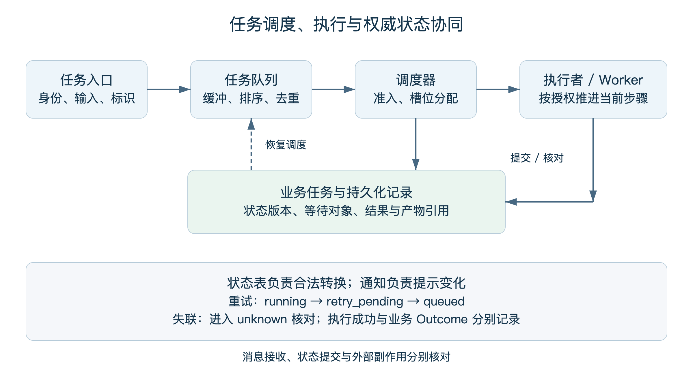
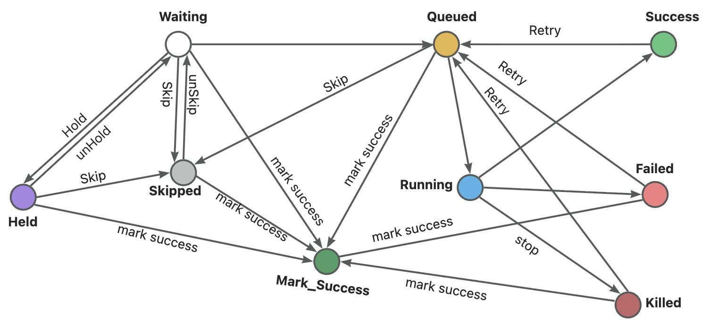
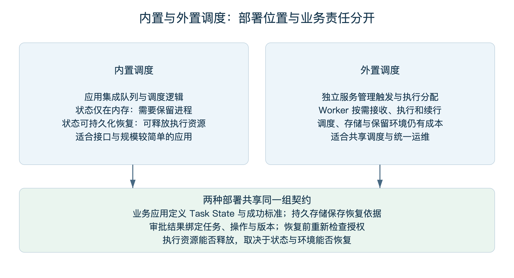
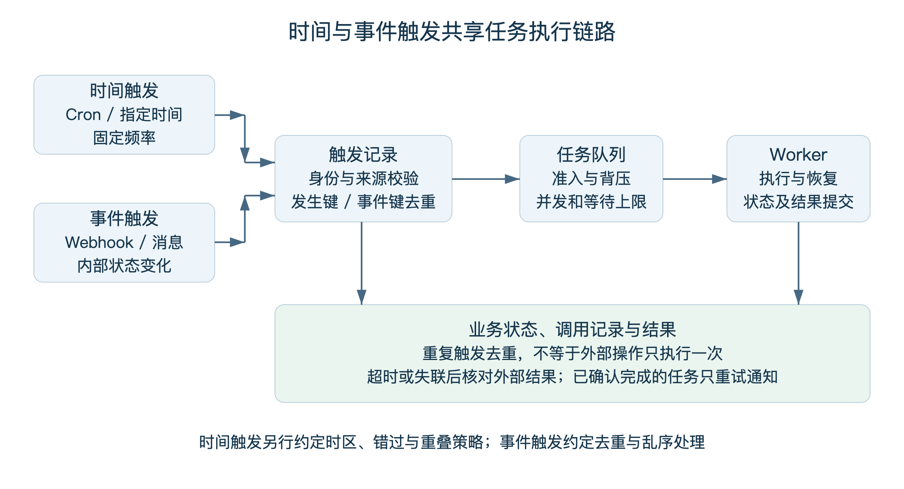

第 10 章 Agent 异步任务与自动化流程¶
许多面向对话或单次请求的 AI Agent 采用同步请求—响应模式：用户发送一条消息，Agent 思考、调用工具、返回结果，整个链路在一次请求中完成。这种模式在简单问答场景下足够高效，但当 Agent 需要承担数据采集与分析报告生成、跨系统流程自动化、周期性监控巡检等长时间、跨请求、需要操作外部环境的任务时，同步模式会暴露出根本性局限——请求超时、上下文窗口溢出、用户必须在线等待、Agent 进程在等待外部事件期间持续占用资源。
本章先说明任务、执行与业务完成的责任边界，再依次讨论异步任务、定时触发、工作流和运行治理。构建篇已说明长程控制循环，这里重点关注生产环境中的可靠接收、调度、等待与恢复。
10.1 任务模型的责任边界与完成语义¶
10.1.1 Task、Session 与 State 的权威关系¶
Task 是异步执行的最小业务单元，具有独立、持久的标识和自己的业务 State。Task 可以跨越等待、恢复、人工审批等多个阶段持续存在，也可以跨多个 Session 续跑。Session 组织相关交互与上下文，可以跨实例存在，其边界不等同于一次进程拉起。Task 与 Session 按业务关联，资源和权限隔离由相应机制保证。
跨 Session 续跑一个 Task，需要 Runtime 显式装载经授权的 Task State(包括业务参数、已完成步骤的 Checkpoint、待恢复的等待对象、副作用记录)，并把当前 Session 与该 Task 关联起来，而不是默认两个 Session 之间天然共享上下文。Task 真正的隔离取决于租户、运行身份、凭证、Environment 和资源边界，Session 只是其中一段执行视图。
业务应用与任务模型定义 Task 的状态、成功标准和合法转换。Harness 组织执行循环；Runtime 管理实例、资源与受支持的恢复；Environment 提供网络、文件和隔离条件；调度器管理触发和执行分配。组件可以由同一产品承载，但状态内容、调度记录与执行环境仍需有明确责任。
下表给出本章使用的对象关系。
| 对象 | 权威来源 | 生命周期 | 典型内容 |
|---|---|---|---|
| Task | 业务应用 / 任务模型 | 跨 Session、跨等待、跨恢复 | Task ID、业务参数、成功标准、当前状态 |
| 业务 State | 业务应用 | 与 Task 同寿 | 业务字段、累计结果、外部副作用记录 |
| Session Context | Harness / Runtime | 按应用定义的会话持续 | 对话历史、当前控制循环上下文 |
| Checkpoint | 工作流引擎 / Runtime | 按恢复契约保存的状态 | 节点输入输出、计算结果、版本号 |
| Runtime State | Runtime | 一次执行租约 | 心跳、租约、Worker 标识、当前步骤 |
| 外部副作用 | 业务系统 | 与外部系统同寿 | 已写入数据、已发出消息、已调用 API |
10.1.2 执行结果与业务完成¶
任务的运行结束、运维健康、证据材料和业务完成分别回答不同问题。沿用构建篇的概念，本节列出异步任务需要关联的五类信息。
执行状态(Execution Status)：Runtime 给出的运行结果信号，如 succeeded、failed（完整状态集合与切换见 10.2.3.3）。它回答"这次执行有没有跑完"，不回答"业务目标是否达成"。
节点运维状态(Operational Status)：基础设施层面的健康信号，如 Worker 是否在线、租约是否有效、依赖系统是否降级。它影响调度决策，不直接等于 Task 结论。
候选证据(Candidate Evidence)：执行过程产生的原始材料，包括日志、Trace、状态快照、Artifact、大语言模型(Large Language Model，LLM)原始响应。材料能否作为业务 Evidence，需要核验来源、完整性及其与验收标准的关系。
Evidence：被业务成功标准明确引用的候选证据，例如报告中的结论能够追溯到约定数据源，所需分析与校验已完成，产物可由接收方读取。
业务 Outcome：由业务应用或获授权 Verifier 根据 Evidence 与成功标准做出的最终判定。LLM-as-a-Judge 是 Evaluation 的一种实现方式，不是 Outcome 的天然权威；人工审核也只有在被授权时才能形成 Outcome。
运维侧的"强制标记成功"操作只能在获授权范围内改变执行状态，并留下完整审计记录(谁、何时、原因、原状态、新状态)；它不能跨越层级直接判定 Outcome。日志、Trace 和 Artifact 默认按最小必要采集，涉及敏感字段做脱敏或散列，凭证禁止入库，访问受基于角色的访问控制(Role-Based Access Control，RBAC)管理，留存有期限。
10.1.3 恢复与幂等的责任划分¶
调度器、检查点和通知机制分别承担不同职责，业务副作用是否允许重试，需要结合外部系统能力决定。
外置调度可以统一触发、并发控制和故障转移，但仍可能发生重复投递。执行端应按业务操作标识核对结果，不把调度成功作为外部操作恰好执行一次的保证。
Checkpoint 保存的是按恢复契约保存的状态(节点输入输出、计算结果)，用于复用计算结果、避免重算。它不等同于外部副作用幂等：若外部写入已提交而 Checkpoint 尚未落盘，重跑仍会产生重复副作用。Checkpoint 必须明确"保存什么、由谁写入、与业务 State 和外部系统提交之间如何排序"，才能参与恢复语义。
幂等机制根据交付语义和外部系统能力组合选择，不存在通用必选项。常见手段包括任务唯一键、幂等键、去重账本、事务性 outbox/inbox、租约与 fencing token、对账与补偿。原子提交、幂等键、对账等机制各有适用前提，应作为设计选择而非默认堆叠。
恢复内容由任务契约决定，通常包括业务状态、等待条件、事件位置或版本、工作区引用和外部操作记录。新实例还需要重新取得有效执行权，不能恢复一份旧心跳就继续提交。Watch、回调和轮询提供变化信号，信号缺失时应重新读取权威状态并对账。
10.2 Agent 异步任务¶
10.2.1 为什么需要异步执行¶
Agent 的工具调用耗时不同，还可能等待人工审批、外部回调和数据就绪。请求超时只能表示调用方未在期限内取得结果，不能证明执行已经停止；后台任务需要独立标识与查询路径。异步执行也不扩大模型上下文窗口，上下文选择与压缩仍由 Harness 负责。
异步任务模型的核心是将执行生命周期与请求生命周期解耦：客户端提交任务并得到可靠接收确认后获得 Task ID，Task 在后台调度器中排队、执行、重试，完成后通过 Webhook 回调、消息推送或主动轮询的方式通知客户端。
10.2.2 异步任务的基本属性¶
定义一个 Task，至少需要明确以下属性。
| 属性 | 说明 |
|---|---|
| 任务名称 | 用于检索和状态跟踪的可读名称 |
| 任务内容 | 执行的具体指令、Prompt 或工作流引用 |
| 优先级 | 决定调度顺序；同优先级按 FIFO(First In First Out，先进先出)排序 |
| Agent / Agent 池 | 由哪一类 Agent 执行，可绑定到具体实例或资源池 |
| 关联 Session(可选) | 本次执行所附加的 Session 上下文；Task 跨 Session 续跑时按 10.1.1 节加载授权的 Task State |
| 成功标准 | 引用 Evidence 与 Verifier，定义业务 Outcome 的判定方式 |
| 重试策略 | 最大重试次数、退避算法、可重试错误分类 |
| 超时时间 | 单次执行的最长时长 |
| 计划调度时间 | 计划开始调度的时间，一般由定时任务生成 |
| 数据业务时间 | 离线业务处理，比如每天00:30要处理上一天的数据 |
| 实际开始时间 | 实际开始执行的时间，一般由task状态机更新 |
10.2.3 异步任务的核心架构¶
一个生产级异步任务系统在逻辑上由三类组件协同：任务队列承担排序与缓冲，调度器负责将 Task 投递给合适的 Worker 并维护租约，任务执行状态机维护生命周期与转换合法性。它们与 Runtime、Environment、业务应用的责任边界遵循 10.1.1 节。

图10-1 任务调度、执行与权威状态的协同
10.2.3.1 任务队列¶
任务队列是 Task 从提交到执行之间的缓冲层，核心能力是按优先级排序、同优先级 FIFO。高优先级任务入队后排在低优先级任务之前；同优先级内部按入队时间先后顺序出队。队列的另一关键职责是积压降级：当生产速率持续超过消费速率(突发流量、Agent 大面积不可用)，队列积压会持续增长。降级策略包括拒绝新任务入队并返回结构化错误、对低优先级任务限速、触发告警让运维介入扩容。队列深度本身是核心可观测指标，持续积压通常意味着执行能力不足或出现系统性故障。
10.2.3.2 调度器¶
调度器是任务队列与 Agent 执行之间的桥梁，职责是从队列取出 Task 并投递给合适的 Worker、维护执行租约、处理重试与故障转移。设计上有两个核心问题。
第一是负载均衡与 Worker 选择。常见策略包括轮询(简单但不感知实际负载)、按当前活动任务或可用槽位分配、加权分配(按算力或配置赋权)、亲和路由(需配合状态恢复契约)。策略选择直接影响吞吐和延迟。
第二是背压(Backpressure)。当所有 Worker 都繁忙时，调度器不应继续从队列取出任务，否则会在 Worker 端堆积或被直接拒绝。"维护空闲/繁忙 Worker 注册表"是背压的一种简单实现，假设单个 Worker 同时只处理一个任务，不是通用定义。生产里更常见的是组合机制：并发配额(每 Worker 最大并发数)、队列水位线(超过阈值暂停拉取)、消费速率自适应(根据完成速率动态调整拉取批量)、租约超时(防止 Worker 失联导致任务卡死)、动态容量(根据 Worker 心跳实时调整可用槽位)。背压的本质是让消费速率自适应执行速率，避免过载崩溃。
10.2.3.3 任务执行状态机¶
任务执行状态机维护生命周期与合法转换。本章使用以下状态集合，下表描述执行调度状态，业务 Outcome 另按验收规则维护。
| 状态 | 含义 | 允许的后续状态 |
|---|---|---|
| waiting | task初始化，等待依赖满足（调度时间、工作流依赖）就入队 | queued、hold、skipped、mark_successed |
| queued | 等待分配执行资源 | running、killed、skipped、mark_successed |
| running | task分发给执行器执行，任务进入运行中 | succeeded、failed、killed |
| hold | 等待审批、输入或外部条件 | waiting、skipped、mark_successed |
| succeeded | 任务执行成功 | queued（用户手动重跑） |
| failed | 任务执行失败 | queued（用户手动重跑）、mark_successed |
| killed | 用户手动终止 | queued（用户手动重跑）、mark_successed |
| skipped | 用户执行跳过 | waiting（用户取消跳过）、mark_successed |
| mark_successed | 用户手动标记成功 | 终态 |
任务状态机状态切换如下图：

状态存储的选型直接影响可靠性：内存存储读写最快但进程重启即丢失；文件存储能抗进程重启但机器不可用时不可达；数据库存储(PostgreSQL、MySQL)提供高可用与持久化保障但引入额外依赖和延迟。生产环境通常以数据库为主存储、内存缓存加速高频查询，并把数据库视为 Task State 的权威源。
10.2.4 任务状态的监听与同步¶
调度器把 Task 分配给 Worker 后，需要持续感知状态变化(running → succeeded / failed / killed)，以便推进状态机、触发通知或执行重试。轮询、回调、Watch 是状态变化信号，不是唯一事实源——任何信号缺失或中断，必须以权威 Task State 重新对账。
方案 A：调度器主动轮询。调度器周期性调用 Worker 的状态查询接口(例如每 5 秒一次，具体频率依业务)，根据返回更新 Task 状态。优点是控制权完全在调度器侧、实现集中；缺点是轮询频率与实时性的取舍——太频繁增加 Worker 与网络开销，太稀疏导致状态延迟。单次轮询失败不能直接推断 Task 异常：网络分区、Worker GC 暂停、临时降级都可能让查询失败但 Worker 仍在执行。判定异常应基于租约/心跳——Worker 周期性续租，租约失效后才把 Task 转入 unknown 并启动对账。
方案 B：Worker 完成回调。Worker 在状态变化时主动向调度器推送事件。优点是实时性好；缺点是依赖 Worker 的"诚实回报"——进程崩溃可能未发出回调，需要超时兜底。回调事件必须带 Task ID、事件序号(或版本号)、Worker 标识、租约 token，调度器据此幂等消费并丢弃迟到事件。
方案 C：共享存储 + 变更通知。Worker 把状态写入调度器与 Worker 共同访问的持久化存储(数据库、Redis、etcd)，调度器通过监听变更感知状态。Redis Keyspace Notification 默认关闭，需要显式开启，且断连期间事件会丢失——重连后必须以当前 key 状态为准重新对账。etcd Watch 基于 revision，如果客户端落后超过 compaction 阈值，Watch 会被取消并返回 ErrCompacted，客户端需以最新 revision 重新建立 Watch 并重新读取全量。共享存储提供持久化保障，但只有当恢复所需的最小集合(业务 State、等待对象、版本号、副作用记录)均已持久化时，才能声称"可恢复完整任务"。
三种方案不互斥。生产实践通常组合使用：回调为主、轮询/租约兜底、共享存储做权威持久化。正常路径上 Worker 完成主动回调；若回调丢失，通过查询或租约异常核对状态；所有状态变更同步落入权威存储，调度器与 Worker 重启后从存储恢复。
10.2.5 Human-in-the-Loop 与 Agent 资源利用率¶
Agent 任务经常需要人工介入(Human-in-the-Loop，HITL)：生成的方案需要确认、风险操作需要审批、不确定的输出需要选择。这意味着 Task 会从 waiting 进入 hold 状态，等待审批或外部输入满足后再入队执行。等待时长从分钟级到数天级不等，直接影响资源利用率和系统复杂度。
内置异步调度将队列和调度逻辑集成在应用中。若状态只在内存里，等待期间需要保留进程；若支持持久化等待与恢复，也可以释放执行资源。是否常驻取决于恢复能力，不由“内置”这一部署位置单独决定。
外置调度由专用系统管理执行分配和唤醒，Agent 完成当前步骤后保存恢复所需状态与引用，再按环境能力释放 Worker。审批事件到达后，调度系统校验任务、授权和等待条件，重新分配资源。等待期仍需承担调度、状态存储、通知及可能保留环境的成本。

图10-2 内置与外置调度的责任边界
| 维度 | 内置调度 | 外置调度 |
|---|---|---|
| 任务队列 / 调度器 / 状态机部署位置 | Agent 进程内 | 独立调度系统 |
| Agent 进程是否常驻 | 取决于等待与状态恢复能力 | 具备恢复条件时可释放执行资源 |
| Task State 管理 | 由业务模型定义，可使用外部持久化 | 同样由业务模型定义，调度系统保存执行与触发记录 |
| 等待期资源占用 | Agent 执行算力 + 调度组件 | 调度组件、状态存储、审批通道仍占用资源 |
| 接入门槛 | 低，自包含 | 需对接调度系统 API、暴露恢复接口 |
| 故障恢复 | 需实现持久化、重新调度与对账 | 复用调度能力，业务状态仍需恢复与对账 |
| 适用场景 | 小规模、对资源利用率不敏感 | 大规模、等待时长不可预测、需要资源弹性 |
HITL 的实现路径除了"调度器暂停 Task + 外部审批回调"，还可以借助工作流引擎的人工节点。Apache Airflow 在 3.1.0 版本引入了 Human-in-the-Loop 能力(此前需要自定义 Operator 实现)；阿里云 MSE-XXLJOB 工作流提供多种逻辑节点，人工节点支持暂停/恢复功能。这些产品负责流程暂停与恢复协调，不自动拥有业务审批授权——授权链路由业务应用与 Verifier 体系定义。
审批结果回传必须明确两件事：事件载荷应包含 Task ID、审批版本号、授权主体、决策结论；接收方是 Runtime 或调度器，据此重新投递执行，并验证事件未过期、未重复、与 Task 当前状态兼容。把"审批通过 → 回调唤醒 Agent"画成一根没有标注接收方的箭头会掩盖这些必要校验。
10.3 Agent 定时任务¶
10.3.1 从被动响应到主动执行¶
定时任务是 Agent 从"被动工具"走向"主动数字员工"的关键能力：每天早 9 点生成日报、每周一检查服务器健康、每小时扫描安全漏洞。它根据用户或业务的预授权，按时间规则创建 Task，使 Agent 能按预设节奏自主运行。
10.3.2 触发方式的分类¶
时间触发和事件触发由不同条件驱动，可以共享后续的任务执行路径。
| 类别 | 子类型 | 说明 |
|---|---|---|
| 时间触发 | Cron | 按 Cron 表达式周期性执行，如每天 14:00 |
| 时间触发 | ScheduledAt | 在未来某一时刻执行一次，如三天后 08:00 |
| 时间触发 | FixedRate | 按固定频率调度，如每 40 秒一次 |
| 事件触发 | Webhook | 系统对外暴露 Webhook 接口，接收业务方推送的事件后创建 Task；方向是“业务方 → Agent 系统” |
| 事件触发 | 消息队列 | 订阅消息队列(Message Queue，MQ)Topic，消息到达即创建 Task |
| 事件触发 | 内部事件 | 系统内部其他 Task 完成或状态变化触发新 Task |
时间触发和事件触发在执行层面走同一条路径：都是向任务队列投递一个 Task。这一统一抽象让两类触发可以共用调度、并发控制、重试、对账机制。
10.3.3 定时任务的基本属性¶
| 属性 | 说明 |
|---|---|
| 触发类型 | Cron / ScheduledAt / FixedRate(事件触发不属于定时类型，见 10.3.2) |
| 状态 | 启用或禁用；禁用后不再调度 |
| 任务并发数 | 同一定时任务允许并行运行的最大 Task 数；1 表示串行 |
| 阻塞处理策略 | 当并发数已满时新触发的 Task 如何处理：排队等待、跳过或按约定合并为最新待执行任务 |
| 错过策略 | 调度器宕机或 Worker 不可用导致触发时间错过后的恢复策略，见下表 |
| 失败重试 | 自动重试的次数与退避策略 |
| 超时 | 单次执行的截止时间，以及取消和未知结果处理方式 |
| 开始时间 | 配置后是立即生效，还是从指定时间开始 |
| 时区与发生标识 | 明确时区、夏令时处理；以调度ID与计划发生时间识别同一次触发 |
以下列出几种可选的错过处理方式，支持范围以调度系统实现为准。
| 策略 | 语义 |
|---|---|
| run_latest | 只补跑错过窗口内最新一次，其余忽略 |
| run_all | 补跑所有错过的触发点，在补跑数量、速率和并发上限内执行 |
| skip | 跳过所有错过的触发，只按下一个未来时间点继续 |
| prompt | 不自动决策，挂起并通知运维或业务方人工选择 |
10.3.4 内置调度与外置调度的责任对比¶
定时任务的调度能力放在 Agent 内部还是外置到专用任务调度系统(XXL-JOB、阿里云 SchedulerX、Apache Airflow 等)，需要从触发统一性、并发控制、故障转移、资源利用、接入门槛、运维复杂度六个维度衡量，而不是简单归结为"是否同进程"。

图10-3 时间与事件触发共享任务执行链路
| 维度 | 内置定时调度 | 外置定时调度 |
|---|---|---|
| 多实例触发去重 | 需自行实现分布式锁或 Leader 选举 | 由调度系统统一管控触发，降低重复触发概率 |
| 故障转移 | 依赖应用自身 | 调度系统提供 failover；failover 期间子任务可能执行多次，业务代码必须保证幂等 |
| 资源占用 | 承载定时器的服务需存活，执行资源可另行管理 | 等待期可释放 Agent 执行算力；调度系统、状态存储、监控通道仍占用资源 |
| 接入门槛 | 初始集成较少，持久化与协调仍可能依赖外部组件 | 需对接调度系统、暴露恢复接口 |
| 运维复杂度 | 与应用绑定，故障定位简单 | 多一套基础设施，但具备统一的运维视图 |
| 适用规模 | 单实例或小规模 | 大规模、多实例、跨地域 |
设计建议：在大规模生产环境中，定时调度能力通常外置到专用任务调度系统，但需要明确以下三点。第一，定时触发与事件触发在执行层统一——两者都是向任务队列投递 Task，共享调度、并发控制、重试、对账机制。第二，外置调度系统不接管业务 State 权威——Task State、成功标准、副作用记录的权威归属仍按 10.1.1 节的责任划分，调度系统持有的是 Runtime State 与触发计划。第三，幂等是业务设计责任——根据交付语义选择幂等机制，不把任何一种写成通用必选项。
10.4 Agent 工作流¶
10.4.1 编排结构的选择与组合¶
当一个复杂任务涉及多个步骤、需要多个 Agent 协调完成时，编排结构维度上有多种选择，业界并未收敛到仅有的两种方案。常见形态包括：单个 Task 内部由 Agent 自主决策(ReAct 风格)、预定义工作流编排(把执行计划固化为图)、Multi-Agent 协调(一个 Planner Agent 动态分解任务并分配给专业 Agent)，以及上述形态的组合——工作流的某个节点内部可以是一个完整的 Agent 自主决策循环；Multi-Agent 也可以由确定性流程约束(把 Planner 的决策范围限定在预定义子图内)。
比较编排方式时，应考虑动态决策需求、路径稳定性、风险和维护成本。预定义工作流可减少重复规划，并使控制路径易于测试，但不会消除节点内模型错误、工具开销和失败重试。多 Agent 适合存在真实专业分工的任务，也可以运行在固定工作流内；具体团队组织与交接见协作章。
10.4.2 工作流的基本概念与节点模型¶
本章把工作流限定为有向无环图(Directed Acyclic Graph，DAG)型工作流——图中节点代表执行单元，有向边代表依赖与数据流向，图本身无环。引擎按拓扑顺序驱动节点执行：入度为零的节点最先执行；后续节点的就绪条件由依赖边类型决定(见 10.4.3)。
需要循环语义时，通过运行时有界展开、动态映射或子流程迭代实现，图本身仍保持无环。例如 ForEach 节点在运行时根据上游集合大小展开为 N 个子任务实例，每个实例走相同的子图；Loop 节点通过子工作流递归调用并设置最大迭代次数，父图依然无环。如果业务确实需要带环的状态流转(例如审批驳回回到起草、反复迭代直到满足质量门槛)，应改用更上位的状态机或流程图模型，而不是把环硬塞进 DAG。
按职责，节点分为业务节点与逻辑节点两类。
业务节点(Task Node)执行具体业务操作，是工作流中"干活"的部分。典型形态包括 Agent 调用(向 LLM Agent 发送 Prompt 并获取响应)、工具调用(外部 API、数据库、消息队列)、代码执行(运行 Python / JavaScript 脚本)、知识检索(从向量库或知识库召回上下文)、人工审批(将流程挂起等待人工确认)、通知推送(发送消息到即时通讯工具 Instant Messaging，IM、邮件、Webhook)。
逻辑节点(Control Node)不执行业务操作，只控制流程走向。显式控制节点能增强分支、等待、复用等表达能力——但仅由业务节点和依赖边构成的 DAG 也可以表达并行与汇聚(多条独立路径并行执行，在某个业务节点处依赖多条入边即天然汇聚)，不能据此判断图必然线性。常见逻辑节点如下表。
| 节点类型 | 作用 |
|---|---|
| 条件分支(Condition / Switch) | 根据上游输出或全局变量决定走哪条路径，例如"分类为紧急工单走人工分支，否则走自动回复分支" |
| 并行(Parallel / Fork) | 将流程拆分为多条并行分支同时执行 |
| 汇聚(Merge / Join) | 等待并行分支输出就绪后合并为统一上下文，具体就绪条件见 10.4.3 |
| 循环(Loop / ForEach) | 通过运行时有界展开对集合逐条或分批执行子流程(图本身仍无环) |
| 等待(Wait / Timer) | 暂停流程，等待指定时长或外部事件 |
| 错误处理(Error Handler / Retry / Fallback) | 定义节点失败时的行为：自动重试、降级到备选路径、抛出异常终止 |
| 子工作流(Sub-Workflow) | 将可复用流程封装为独立工作流，作为节点被父工作流调用 |
10.4.3 节点就绪条件：普通依赖、AND Join、OR Join¶
工作流引擎的默认调度规则与显式汇聚规则需要明确衔接，否则"所有前依赖完成"和"任一完成即继续"会在同一张图里互相矛盾。本章使用以下定义。
| 边类型 | 就绪条件 | 未选 / 未完成分支处理 |
|---|---|---|
| 普通依赖边 | 上游节点状态为 succeeded或skipped | 上游失败按错误处理策略(终止、降级、重试) |
| AND Join | 所有入边的上游分支均到达终态(succeeded / failed / killed / skipped)，且满足策略要求(全部成功 / 至少 N 个成功) | 任一分支失败按策略决定是否触发 Join |
| OR Join | 任一入边的上游分支满足条件即就绪 | 未被选择的分支由引擎显式取消;迟到结果按审计日志归档，不改变下游已就绪状态 |
OR Join 的关键是显式取消未选分支，否则它们会继续消耗资源、产生副作用，与下游已基于"先到结果"做出的决策冲突。迟到结果(分支在 Join 已就绪之后才完成)进入审计日志，供事后分析，不参与下游计算。
10.4.4 工作流引擎的核心工程能力¶
在节点模型之上，生产级 Agent 工作流引擎还需要解决三类工程问题。
状态持久化与断点恢复。每个节点完成后，引擎将输入、输出、执行状态持久化为步骤级 Checkpoint。后续节点的输入从 Checkpoint 读取，而非重新计算。这使工作流执行不依赖任何单个工作进程——进程崩溃后，引擎从存储层恢复上下文，从最后一个成功 Checkpoint 继续执行。这与 10.2.5 节外置调度的责任立场一致：状态外置到持久化存储，执行进程无状态化；但 Checkpoint 保存的是按恢复契约保存的状态，业务 State 的权威仍在业务应用(参见 10.1.1)。
幂等与局部重跑。节点可能因进程崩溃或调度重复分发而被重新执行。需要区分两件事：步骤计算结果复用——若 Checkpoint 已存在且版本匹配，跳过重新计算，这是 Checkpoint 的天然能力；外部副作用幂等——若节点已对外部系统提交写入(数据库 INSERT、消息发送、API 调用)，Checkpoint 是否落盘不能保证副作用未发生。当外部写入已提交而 Checkpoint 尚未落盘，重跑仍会产生重复副作用。
外部调用可以先保存意图，执行后再保存结果；意图记录、消息发布和状态提交之间的故障窗口，按后端能力使用事务、Outbox、幂等键或对账处理。围栏用于拒绝过期执行者的提交，不能替代跨系统事务。局部重跑应复用版本仍有效的前序结果，并核对失败步骤的副作用；邮件、扣款等已发生操作通常只能确认或补偿，不能由恢复检查点撤销。
可视化运维。生产级工作流应提供可视化执行视图：DAG 拓扑上标注每个节点的实时状态（waiting / queued / running / hold / succeeded / failed / killed / skipped / mark_successed，见 10.2.3.3）、耗时、重试次数；支持人工介入操作（重跑 → queued、跳过 → skipped、强制标记成功 → mark\_successed、暂停 → hold、终止 → killed）。"强制标记成功"按 10.1.2 节只改变执行状态并留下审计记录，不直接判定 Outcome。
可观测数据采集不应是无条件的全量记录。默认按最小必要采集，涉及敏感字段做字段级脱敏或散列，凭证秘密禁止入库，访问受 RBAC 控制，留存有明确期限，审计日志保证完整性(只追加、防篡改)。"查看任意节点的输入输出和 LLM 原始响应"这类能力应按需授权，而不是默认开放——无人值守任务的执行上下文经常携带客户数据、内部凭证、商业敏感信息，默认全量记录会显著扩大攻击面与合规风险。告警方面，节点失败、整体超时、定时工作流未触发等事件应自动推送；配置了自愈策略的节点(自动重试 + 指数退避)无需人工介入。
10.5 横切关注点：治理、可观测性与安全¶
10.5.1 可观测性、Evaluation 与 Outcome 的责任分层¶
可观测系统提供运行材料，评估系统产生评分和诊断，业务应用或获授权验收组件判断 Outcome。三者可以协同，但应记录各自的来源和方法。通用体系在治理篇展开，本章重点关联触发、排队、等待、重试与结果交付。
Observability 负责关联系统、任务与语义信号：把 Trace、日志、状态、Artifact 串成可查询的链路，提供执行状态、节点运维状态与候选证据的统一视图。它的输出是材料，不是结论。
Evaluation 使用这些材料评分与归因：LLM-as-a-Judge 自动评测、规则匹配、人工抽样审核都是 Evaluation 的实现方式。Evaluation 的输出是评分或诊断，仍不是 Outcome。
Outcome 由业务应用或获授权 Verifier根据成功标准与 Evidence 做出最终判定。评分被用于验收时，应有明确的适用标准与授权。
10.5.2 安全与权限¶
无人值守任务按预授权范围执行，持续检查当前身份、任务和资源策略。超出范围的操作按策略审批或拒绝，等待后恢复时重新核验授权。审计记录主体、目标、策略和结果，内容字段按数据等级脱敏并限制留存。
无人值守场景还需要补充以下维度：运行身份——任务以哪个用户/服务账号身份执行，凭证如何获取与轮转；租户隔离——多租户环境下 Task State、Checkpoint、Artifact 的隔离边界；网络出口——任务能访问哪些外部域名/IP，出口流量是否经审计代理；审批超时——hold 状态超过阈值后的默认行为(拒绝、继续保持等待或升级处理；超时本身不构成批准)。
10.5.3 成本治理¶
任务成本至少包括：模型 Token(LLM 输入输出)、工具与外部 API 调用(搜索、向量检索、第三方服务)、计算资源(Agent 进程、沙箱、容器)、存储(Task State、Checkpoint、Artifact、日志)、网络(出口流量、跨地域调用)、重试与补偿(失败重跑、对账修复)、人工审批(运维与审批人员的时间成本)。
预算维度也需要相应扩展：调用次数、执行时长、并发数、外部副作用次数、总费用。治理手段包括单次执行 Token 与费用上限、每日 / 每月累计预算、预算耗尽时自动暂停并告警、基于历史数据的成本预测与异常检测。在异步与定时场景下(无人在场监督)，死循环 Agent 在数小时内累积出非预期账单是真实风险——具体的金额量级依模型与调用模式而异，应按实际模型、工具价格与历史负载设定阈值。
本章小结¶
异步任务、定时任务和工作流分别描述执行方式、触发方式与编排结构，可以自由组合：定时触发的工作流可以异步执行，事件触发也可以投递单 Task，工作流节点内可以嵌入 Agent 自主决策。
把生产级 Agent 平台落地，关键不在堆叠组件，而在分清责任边界：Task 具有独立持久的标识与业务 State，Session 只是其中一段执行上下文；业务应用拥有 Task 与成功标准的权威，Harness 组织控制循环，Runtime 管执行生命周期与租约，Environment 提供运行条件，调度器协调触发与执行。完成语义按"执行状态—候选证据—Evidence—Verifier—Outcome"分层，运维操作只在授权范围内改变对应层级。
恢复与幂等不能外包给任何单一组件：外置调度降低重复触发概率，但业务副作用需要按可用能力组合去重、幂等、执行围栏、对账与补偿；不能保证恰好一次时应明确边界；Checkpoint 复用计算结果，但不等同于副作用幂等；轮询、回调、Watch 是状态变化信号，不是权威事实源，信号缺失后必须以权威 Task State 重新对账。
可观测性、Evaluation、Outcome 各归其位，安全与成本治理覆盖完整维度而非单一指标。这些原则共同决定 Agent 平台能否从"原型 Demo"走向"可信赖的生产系统"。